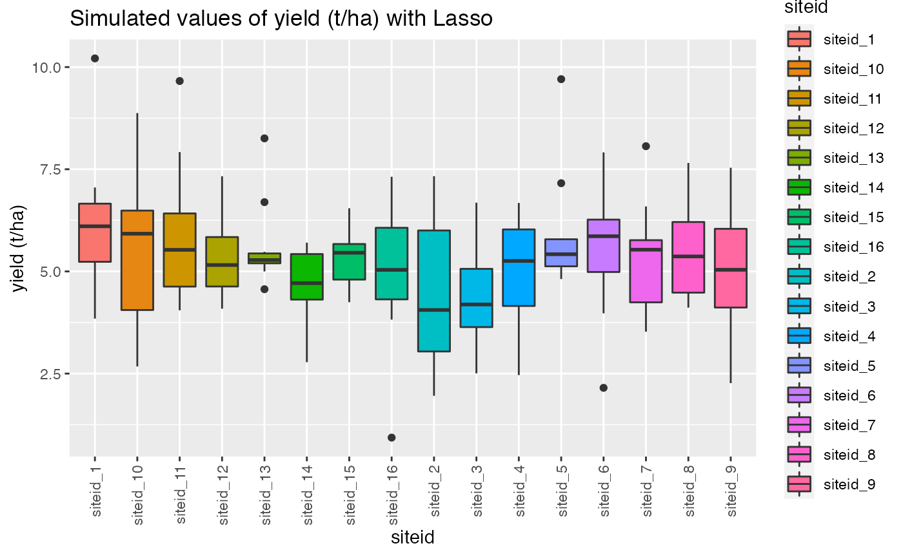

InnoVar simulations
Danilo Sarti
2022-11-16
innovar_flow.RmdLoading Packages
library(InnoVaR)
#> Warning: replacing previous import 'jmuOutlier::rlaplace' by 'rmutil::rlaplace'
#> when loading 'InnoVaR'
#> Warning: replacing previous import 'jmuOutlier::qlaplace' by 'rmutil::qlaplace'
#> when loading 'InnoVaR'
#> Warning: replacing previous import 'jmuOutlier::plaplace' by 'rmutil::plaplace'
#> when loading 'InnoVaR'
#> Warning: replacing previous import 'jmuOutlier::dlaplace' by 'rmutil::dlaplace'
#> when loading 'InnoVaR'
library(tidyverse)
library(ggplot2)
library(readxl)
library(readr)
library(copula)
library(mice)
library(checkmate)
library(jmuOutlier)
library(ggpubr)Loading datasets containing the attributes of the modules to be simulated
load("/Volumes/T7 Touch/InnoVaR/data/gen_att.rda")
head(gen_att)
#> # A tibble: 6 × 100
#> trait_1 trait_2 trait_3 trait_4 trait_5 trait_6 trait_7 trait_8 trait_9
#> <chr> <chr> <chr> <chr> <chr> <chr> <chr> <chr> <chr>
#> 1 0 0 0 0 0 0 0 0 0
#> 2 1 1 1 1 1 1 1 1 1
#> 3 2 2 2 2 2 2 2 2 2
#> 4 NA NA NA NA NA NA NA NA NA
#> 5 NA NA NA NA NA NA NA NA NA
#> 6 NA NA NA NA NA NA NA NA NA
#> # … with 91 more variables: trait_10 <chr>, trait_11 <chr>, trait_12 <chr>,
#> # trait_13 <chr>, trait_14 <chr>, trait_15 <chr>, trait_16 <chr>,
#> # trait_17 <chr>, trait_18 <chr>, trait_19 <chr>, trait_20 <chr>,
#> # trait_21 <chr>, trait_22 <chr>, trait_23 <chr>, trait_24 <chr>,
#> # trait_25 <chr>, trait_26 <chr>, trait_27 <chr>, trait_28 <chr>,
#> # trait_29 <chr>, trait_30 <chr>, trait_31 <chr>, trait_32 <chr>,
#> # trait_33 <chr>, trait_34 <chr>, trait_35 <chr>, trait_36 <chr>, …
load("/Volumes/T7 Touch/InnoVaR/data/soil_att_innovar.rda")
head(soil_att_innovar)
#> # A tibble: 6 × 129
#> yes_n…¹ siteid Drana…² Weath…³ Weath…⁴ USDAT…⁵ USDAM…⁶ Physi…⁷ Major…⁸ Major…⁹
#> <chr> <chr> <chr> <chr> <chr> <chr> <chr> <chr> <chr> <chr>
#> 1 Yes 1 Very p… Sunny/… No rai… Pergel… Aquic Crest … Level … Plain
#> 2 No 2 Poorly… Partly… No rai… Cryic Udic Upper … Slopin… Plateau
#> 3 NA 3 Imperf… Overca… No rai… Frigid Ustic Middle… Steep … Depres…
#> 4 NA 4 Modera… Rain Rainy … Mesic Xeric Lower … NA Valley…
#> 5 NA 5 Well d… Sleet Heavie… Thermic Aridic Toe sl… NA Medium…
#> 6 NA 6 Somewh… Snow Extrem… Hypert… Peraqu… Bottom… NA Medium…
#> # … with 119 more variables: LandformComplexValue <chr>,
#> # SlopePathwaysValue <chr>, SlopeFormValue <chr>, SlopeGradientValue <chr>,
#> # SlopeOrientation <chr>, LandUseClassValue1 <chr>, LandUseClassValue2 <chr>,
#> # LandUseClassValue3 <chr>, CropClassValue1 <chr>, CropClassValue2 <chr>,
#> # HumanInfluenceClassValue <chr>, VegetationClassValue1 <chr>,
#> # VegetationClassValue2 <chr>, LithologyValueClass <chr>,
#> # LithologyValueGroup <chr>, LithologyValueType <chr>, …
soil_att_ex=soil_att_innovarSimulating soil module:
declaring global information
## declaring the number of variables in the module
n_var_soil=ncol(soil_att_ex)
## filtering the categorical ones.
soil_cat=soil_att_ex %>% select(which(sapply(soil_att_ex, class) == 'character'))
## filtering the numerical values.
soil_num=soil_att_ex %>% select(which(sapply(soil_att_ex, class) != 'character'))Informing correlations known a priori
known_neg_dis=calculate_trig_dis(c(-0.8016201, -0.8022176, -0.7633010))
known_pos_dis=calculate_trig_dis(c(0.5,0.6,0.9))creating a data frame to store
n_var=ncol(soil_att_ex)
soil_coordinates=module_coords(n_var=ncol(soil_att_ex),
which_neg=c("2_1","6_2","1_9","1_6","2_3"),
dis_neg_know_ass=known_neg_dis,
coo_known_neg_ass=c("2_1","6_2","1_9"),
dis_pos_know_ass=known_pos_dis,
coo_known_pos_ass=c("3_9","4_5","6_8"),
by=0.00001## this should be small
)Assuring correlation matrices
soil_corr=round(assure_corr(n_var=n_var,corr=sym_sin_soil))
library(matrixcalc)
soil_corr=as.matrix(soil_corr)
#Checking if its positive definite.. if you round the matrix it can be not positie definite.
is.positive.definite(soil_corr)
#> [1] TRUESetting a copula to simulation
sim_data_cop=set_sim_copula(d=n_var,
lower_tri_corr=soil_corr[lower.tri(soil_corr,diag=FALSE)],
n_cont_var=ncol(soil_num),
cont_var_par=list(list(lambda=40),list(df=30,ncp=3),
list(shape=40,scale=10),list(rate=30),list(lambda=40),list(df=30,ncp=3),
list(shape=40,scale=10),list(rate=30),list(lambda=40),list(df=30,ncp=3),
list(shape=40,scale=10),list(rate=30),list(lambda=40),list(df=30,ncp=3),
list(shape=40,scale=10)) ,
n_unique=length(unique(na.omit(soil_att_ex$siteid))),
mar_cont_dists=c("pois","chisq","gamma","exp","pois","chisq","gamma","exp","pois","chisq","gamma","exp","pois","chisq","gamma"),
var_names=colnames(soil_att_ex)
)
###
cut_data_soil=cut_levels(categorical=soil_cat,
cat_inc_all_levels=c("siteid"),
levels_inc_all=list(siteid=c(1:16)), continuous_to_cut=sim_data_cop$simulated
)
head(cut_data_soil)
#> yes_no_sample DranaigeClass WeatherConditionsValue_present
#> 1 No Excessively drained Sleet
#> 2 Yes Moderately well drained Sleet
#> 3 No Imperfectly drained Overcast
#> 4 No Moderately well drained Snow
#> 5 Yes Imperfectly drained Rain
#> 6 Yes Imperfectly drained Overcast
#> WeatherConditionsValue_former USDATempCode
#> 1 Rainy without heavy rain in the last 24 hours Isomesic
#> 2 No rain in the last week Pergelic
#> 3 Extremely rainy time or snow melting Cryic
#> 4 Heavier rain for some days or rainstorms in the last 24 hours Pergelic
#> 5 No rain in the last 24 hours Thermic
#> 6 No rain in the last week Isomesic
#> USDAMoistureCode PhysiographyValue MajorLandformValue1
#> 1 Ustic Lower slope (foot slope) Level land
#> 2 Peraquic Upper slope (shoulder) Sloping land
#> 3 Xeric Bottom (drainage line) Steep land
#> 4 Peraquic Toe slope Steep land
#> 5 Aridic Crest (summit) Level land
#> 6 Aquic Toe slope Steep land
#> MajorLandformValue2 LandformComplexValue SlopePathwaysValue
#> 1 Medium-gradient valley Ridged SS
#> 2 Medium-gradient valley Terraced VC
#> 3 Medium-gradient mountain With wetlands SS
#> 4 Depression Terraced SC
#> 5 Valley floor With intermontane plains SC
#> 6 Medium-gradient escarpment zone With intermontane plains CC
#> SlopeFormValue SlopeGradientValue SlopeOrientation
#> 1 Concave Strongly sloping South
#> 2 Straight Sloping East-north-east
#> 3 Concave Flat North-east
#> 4 Complex (Irregular) Flat North-east
#> 5 Concave Steep North-east
#> 6 Complex (Irregular) Very gently sloping West
#> LandUseClassValue1 LandUseClassValue2
#> 1 Crop agriculture (cropping) Agroforestry
#> 2 Crop agriculture (cropping) Nature and game preservation
#> 3 Animal husbandry Residential use
#> 4 Not used and not managed Extensive grazing
#> 5 Animal husbandry Transport
#> 6 Forestry Residential use
#> LandUseClassValue3 CropClassValue1
#> 1 Non-irrigated tree crop cultivation Vegetables
#> 2 Non-irrigated shrub crop cultivation Fibre crops
#> 3 Non-irrigated tree crop cultivation Other crops
#> 4 Non-irrigated tree crop cultivation Semi-luxury foods and tobacco
#> 5 Shifting cultivation Vegetables
#> 6 Irrigated tree crop cultivation Roots and tubers
#> CropClassValue2 HumanInfluenceClassValue
#> 1 Leguminous No influence
#> 2 Barley Mine (surface, including openpit, gravel and quarries)
#> 3 Leguminous Vegetation moderately disturbed
#> 4 Soybeans Application of fertilizers
#> 5 Rubber Pollution
#> 6 Lentils Pollution
#> VegetationClassValue1 VegetationClassValue2
#> 1 Groundwater-fed bog peat Xeromorphic shrub
#> 2 Woodland Xeromorphic woodland
#> 3 Woodland Deciduous shrub
#> 4 Dwarf shrub Evergreen woodland
#> 5 Woodland Evergreen woodland
#> 6 Shrub Deciduous shrub
#> LithologyValueClass LithologyValueGroup LithologyValueType
#> 1 Sedimentary rock (consolidated) IA SC5
#> 2 Metamorphic rock UR IP2
#> 3 Igneous rock UU UM2
#> 4 Igneous rock II UU5
#> 5 Metamorphic rock UC UC1
#> 6 Metamorphic rock SO IU2
#> SurfaceAgeValue RockOutcropsCoverValue RockOutcropsDistanceValue
#> 1 lPf Abundant < 2 m
#> 2 Ha Abundant 2–5 m
#> 3 T Dominant 2–5 m
#> 4 lPf None 5–20 m
#> 5 oPp Common > 50 m
#> 6 lPi Common > 50 m
#> FragmentCoverValue FragmentsSizeValue
#> 1 Many Fine gravel
#> 2 Abundant Coarse gravel
#> 3 Very few Stones
#> 4 Few Coarse gravel
#> 5 Dominant Fine gravel
#> 6 Common Fine gravel
#> ErosionCategoryValue1 ErosionCategoryValue2
#> 1 Mass movement (landslides and similar phenomena) Wind erosion and deposition
#> 2 Not known Wind deposition
#> 3 Wind (aeolian) erosion or deposition Tunnel erosion
#> 4 Mass movement (landslides and similar phenomena) Wind deposition
#> 5 No evidence of erosion Wind erosion and deposition
#> 6 Wind (aeolian) erosion or deposition Gully erosion
#> ErosionTotalAreaAffectedValue ErosionDegreeValue
#> 1 25–50 % Moderate
#> 2 0 % Extreme
#> 3 0 % Extreme
#> 4 0 % Severe
#> 5 > 50 % Severe
#> 6 10–25 % Extreme
#> ErosionActivityPeriodValue SealingThicknessValue
#> 1 Accelerated and natural erosion not distinguished Thick
#> 2 Accelerated and natural erosion not distinguished Very thick
#> 3 Active in historical times Thin
#> 4 Period of activity not known Medium
#> 5 Active at present Thin
#> 6 Active in recent past Thick
#> SealingConsistenceValue CracksWidthValue CracksDepthValue
#> 1 Hard Very wide (5 - 10 cm) Surface (< 2 cm)
#> 2 Very hard Wide (2 - 5 cm) Surface (< 2 cm)
#> 3 Slightly hard No cracks observed Medium (2 - 10 cm)
#> 4 Slightly hard No cracks observed Deep (10 - 20 cm)
#> 5 Hard Very wide (5 - 10 cm) Surface (< 2 cm)
#> 6 Hard Medium (1 - 2 cm) Deep (10 - 20 cm)
#> CracksDistanceValue SaltCoverValue SaltThicknessValue
#> 1 Moderately widely spaced (0,5 - 2 m) Dominant (> 80%) Thin (< 2 mm)
#> 2 Widely spaced (2 - 5 m) None (0 - 2 %) Thin (< 2 mm)
#> 3 Widely spaced (2 - 5 m) Low (2 - 15 %) Medium (2 - 5 mm)
#> 4 Widely spaced (2 - 5 m) Moderate (15 - 40 %) Thin (< 2 mm)
#> 5 Closely space (0,2 - 0,5 m) Moderate (15 - 40 %) Medium (2 - 5 mm)
#> 6 Closely space (0,2 - 0,5 m) Low (2 - 15 %) Medium (2 - 5 mm)
#> BleachedSandValue BoundaryDistinctnessValue
#> 1 None (0 - 2 %) Abrupt (0 - 2 cm)
#> 2 Low (2 - 15 %) Gradual (5 - 15 cm)
#> 3 None (0 - 2 %) Abrupt (0 - 2 cm)
#> 4 None (0 - 2 %) Abrupt (0 - 2 cm)
#> 5 High (40 - 80 %) Clear (2 - 5 cm)
#> 6 Dominant (> 80%) Abrupt (0 - 2 cm)
#> BoundaryTopographyValue FieldTexture TextureValue
#> 1 Smooth; nearly plane surface Clay Loam
#> 2 Irregular; pockets more deep than wide Clay Sandy clay
#> 3 Wavy; pockets less deep than wide Clay Sand (unspecified)
#> 4 Smooth; nearly plane surface Clay Silt
#> 5 Wavy; pockets less deep than wide Sand Clay loam
#> 6 Wavy; pockets less deep than wide Sand Sand (unspecified)
#> SandyTextureValue TextureClassValue ArtefactsAbundance
#> 1 Coarse sand Loam Few (2 - 5 %)
#> 2 Coarse sand Silt loam (clay-poor) Common (5 -15 %)
#> 3 Loamy coarse sand Sandy clay loam Abundant (40 - 80 %)
#> 4 Medium sand Heavy clay Abundant (40 - 80 %)
#> 5 Coarse sand Silt loam (clay-poor) Abundant (40 - 80 %)
#> 6 Sand, unsorted Silt loam (clay-poor) Few (2 - 5 %)
#> RockSizeValue2 ArtefactsSizeValue
#> 1 Large boulders (> 600 mm) Medium artefacts (6 - 20 mm)
#> 2 Medium gravel (6 - 20 mm) Fine artefacts (2 - 6 mm)
#> 3 Boulders (200 - 600 mm) Coarse artefacts (> 20 mm)
#> 4 Large boulders (> 600 mm) Fine artefacts (2 - 6 mm)
#> 5 Fine gravel (2 - 6 mm) Medium artefacts (6 - 20 mm)
#> 6 Stones (60 - 200 mm) Medium artefacts (6 - 20 mm)
#> ArtefactsSizeCombi RockShapeValue ArtefactsWeatheringValue
#> 1 Stones and boulders Flat Fresh or slightly weathered
#> 2 Boulders and large boulders Flat Weathered
#> 3 Boulders and large boulders Angular Weathered
#> 4 Fine and medium gravel/artefacts Subrounded Strongly weathered
#> 5 Stones and boulders Angular Weathered
#> 6 Stones and boulders Flat Weathered
#> MineralFragmentsValue PeatDecompostionValue AbundanceValue SizeValue
#> 1 Quartz D2 Abundant (> 40 %) Fine (2 - 6 mm)
#> 2 Mica D5.1 Common (5 -15 %) Fine (2 - 6 mm)
#> 3 Quartz D1 Common (5 -15 %) Fine (2 - 6 mm)
#> 4 Quartz D2 Abundant (> 40 %) Coarse (> 20)
#> 5 Mica D2 None (-) Fine (2 - 6 mm)
#> 6 Mica D1 Common (5 -15 %) Coarse (> 20)
#> ContrastValue BoundaryClassificationValue CarbonatesContentValue
#> 1 Prominent Clear (0,5 - 2 mm) Extremely calcareous
#> 2 Faint Clear (0,5 - 2 mm) Strongly calcareous
#> 3 Faint Sharp (< 0,5 mm) Non-calcareous
#> 4 Distinct Sharp (< 0,5 mm) Extremely calcareous
#> 5 Faint Sharp (< 0,5 mm) Moderately calcareous
#> 6 Faint Diffuse (> 2mm) Extremely calcareous
#> CarbonatesFormsValue GypsumContentValue
#> 1 Pseudomycelia Moderately gypsiric
#> 2 Soft concretions Extremely gypsiric
#> 3 Hard hollow concretions Extremely gypsiric
#> 4 Hard cemented layer or layers of carbonates Non-gypsiric
#> 5 Hard concretions Extremely gypsiric
#> 6 Soft concretions Slightly gypsiric
#> GypsumFormsValue SaltContentValue WaterContentSat
#> 1 “gazha” EX Gravel, CS
#> 2 Disperse powdery gypsum ST SiL 10–27% clay
#> 3 Soft concretions VST SiL 10–27% clay
#> 4 Disperse powdery gypsum MO CL, SiCL
#> 5 Disperse powdery gypsum N LS, SL < 10% clay
#> 6 Hard cemented layer or layers of gypsum N HC > 60% clay
#> FieldPh SoilOdourValue AndicCharacteristics
#> 1 pHCaCl2 of < 4.2, if < 4% OM Petrochemical -
#> 2 pHCaCl2 of < 4.2, if < 4% OM None -
#> 3 pHCaCl2 of < 3.6, if > 15% OM Petrochemical -
#> 4 pHCaCl2 of < 4.6, if 4–15% OM Petrochemical -
#> 5 pHCaCl2 of < 3.4, if 4–15% OM None -
#> 6 pHCaCl2 of < 3.2, if < 4% OM Sulphurous -
#> OrganicMatterEstimation StructureGradeValue StructureTypeValue
#> 1 Dark grey Munsell value 4 Strong Platy
#> 2 Grey Munsell value 5 Moderate Granular
#> 3 Grey Munsell value 6 Weak Wedge-shaped
#> 4 Grey Munsell value 5,5 Strong Wedge-shaped
#> 5 Light grey Munsell value 7 Weak Rock structure
#> 6 Light grey Munsell value 6,5 Moderate to strong Crumbs, lumps and clods
#> StructureCodeValue StructureSizeValue CombiSoilStructureSize
#> 1 Angular blocky (parallelepiped) Very coarse / thick Medium and coarse
#> 2 Angular blocky (parallelepiped) Medium Fine to coarse
#> 3 Angular blocky Coarse / thick Very fine and fine
#> 4 Rock structure Very coarse / thick Fine to coarse
#> 5 Worm casts Very fine / thin Fine and medium
#> 6 Platy Coarse / thick Fine to coarse
#> CombiSoilStructure ConsistenceDryValue
#> 1 One structure merging into the other soft to slightly hard
#> 2 One structure merging into the other hard to very hard
#> 3 One structure merging into the other slightly hard to hard
#> 4 Primary breaking to secondary structure Extremely hard
#> 5 Both structures present Loose
#> 6 Primary breaking to secondary structure slightly hard to hard
#> ConsistenceMoistValue StickinessValue PlasticityValue
#> 1 very friable to friable Slightly sticky slightly plastic to plastic
#> 2 Loose Slightly sticky plastic to very plastic
#> 3 Firm slightly sticky to sticky Non-plastic
#> 4 Very firm Slightly sticky Very plastic
#> 5 firm to very firm Very sticky Slightly plastic
#> 6 Extremely firm Non-sticky Plastic
#> MoistureValue BulkDensityMineralValue
#> 1 Very wet angular blocky
#> 2 Moist angular blocky
#> 3 Moist angular blocky, prismatic, platy, columnar
#> 4 Slightly moist angular blocky
#> 5 Dry prismatic
#> 6 Wet prismatic
#> BulkDensityPeatValue PeatDrainageValue PorosityValue VoidsClassificationValue
#> 1 > 0.17 Rather loose High Channels
#> 2 > 0.17 Dense High Channels
#> 3 0.11–0.17 Almost swimming High Vesicular
#> 4 0.07–0.11 Dense Medium Vughs
#> 5 < 0.04 Dense Very high Interstitial
#> 6 0.11–0.17 Loose Low Vughs
#> VoidsDiameterValue PoresAbundanceValue CoatingAbundanceValue
#> 1 Fine and very fine Very few None
#> 2 Medium and coarse Few Dominant
#> 3 Very fine Few Common
#> 4 Coarse Many Many
#> 5 Very fine None Abundant
#> 6 Fine and very fine Few Many
#> CoatingContrastValue CoatingNatureValue CoatingFormValue
#> 1 Faint Sand coatings Dendroidal
#> 2 Distinct Silica (opal) Dendroidal
#> 3 Faint Clay and sesquioxides Discontinuous irregular
#> 4 Distinct Slickensides, non intersecting Dendroidal
#> 5 Faint Sesquioxides Dendroidal
#> 6 Distinct Calcium carbonate Dendroidal
#> CoatingLocationValue CementationContinuityValue CementationFabricValue
#> 1 Lamellae (clay bands) Broken Nodular
#> 2 Vertical pedfaces Continuous Platy
#> 3 Pedfaces Broken Vesicular
#> 4 No specific location Broken Pisolithic
#> 5 Vertical pedfaces Discontinuous Nodular
#> 6 No specific location Discontinuous Pisolithic
#> CementationNatureValue CementationDegreeValue ConcentrationVolumeValue
#> 1 Carbonates Weakly cemented Common
#> 2 Not known Compacted but non-cemented Dominant
#> 3 Clay-sesquioxides Indurated None
#> 4 Ice Weakly cemented Many
#> 5 Silica Indurated Abundant
#> 6 Clay Moderately cemented Very few
#> ConcentrationKindValue ConcentrationSizeValue
#> 1 Concretion Fine
#> 2 Crystal Medium
#> 3 Crystal Fine
#> 4 Other Fine
#> 5 Soft segregation (or soft accumulation) Coarse
#> 6 Nodule Fine
#> ConcentrationShapeValue ArtefactsHardnessValue ConcentrationNatureValue
#> 1 Elongated Soft Iron-manganese (sesquioxides)
#> 2 Irregular Soft Carbonates (calcareous)
#> 3 Flat Soft Iron (ferruginous)
#> 4 Elongated Soft Carbonates (calcareous)
#> 5 Rounded (spherical) Hard Not known
#> 6 Angular Hard Manganese (manganiferous)
#> ArtefactsColourValue RootsDiameterValue RootsAbundanceValue
#> 1 Reddish brown Fine and medium Common
#> 2 Greyish Very fine Many
#> 3 Greenish Very fine and fine Very few
#> 4 White Coarse Many
#> 5 Bluish-black Fine and medium None
#> 6 Multicoloured Medium Many
#> BiologicalAbundanceValue BiologicalFeaturesValue
#> 1 Common Pedotubules
#> 2 None Termite or ant channels and nests
#> 3 Many Burrows (unspecified)
#> 4 Few Charcoal
#> 5 None Charcoal
#> 6 Few Other insect activity
#> ArtefactsKind DepositsValue1
#> 1 Industrial dust Stratified (spoiled materials)
#> 2 Waste liquid Stratified (spoiled materials)
#> 3 Artesanal natural material Stratified (spoiled materials)
#> 4 Synthetic liquid Stratified (spoiled materials)
#> 5 Synthetic liquid Stratified (spoiled materials)
#> 6 Pavements and paving stones Stratified (spoiled materials)
#> DepositsValue2
#> 1 Grey to black, H2S smell, > 30 percent artefacts (glass, ceramic, leather, wood, plastic, metals) --> waste --> ...UA2
#> 2 Loamy, with carbonates --> calcareous loam --> ...UU3
#> 3 Mixture of sand, silt and clay --> loam --> ...UU2
#> 4 Loamy, with carbonates --> calcareous loam --> ...UU3
#> 5 Dark grey to black, faecal smell, artefacts --> faecal sludge --> ...UA2
#> 6 Dark grey to black, H2S smell --> dredge mud of lakes --> ...UA1
#> soildepthclass siteid
#> 1 major than observed depth siteid_1
#> 2 equal to observed depth siteid_2
#> 3 major than observed depth siteid_3
#> 4 equal to observed depth siteid_4
#> 5 equal to observed depth siteid_5
#> 6 equal to observed depth siteid_6Simulating genomic module
declaring global information
We need to simulate the I genotypes expression of n markers. We assume that the genetic constitution of the genotypes does not differ across environments.
#our problem is to simulate the expression of 100 traits for each genotype inside each J environments.
known_neg_dis_gen=calculate_trig_dis(c(-0.8016201, -0.8022176, -0.7633010,0.80))
known_pos_dis_gen=calculate_trig_dis(c(0.5,0.6,0.9,0.1))
# we redefine the structure
n_genotypes=10
n_markers= ncol(gen_att)
gen_i_expr=vector("list", length = n_markers)
## we need to insert the levels of genotypes to be considered
genotypes_id=sprintf("genotype_%d",seq(1:n_genotypes))
gen_att=add_to_df(gen_att,genotypes_id)
names(gen_att)[101]="genotype_id"
gen_i_coords=module_coords(n_var=ncol(gen_att),
which_neg = c("1_2","4_5","2_3","20_4","30_3"),
dis_neg_know_ass =known_neg_dis_gen,
coo_known_neg_ass=c("4_5","2_3","20_4","30_3"),
dis_pos_know_ass =known_pos_dis_gen,
coo_known_pos_ass = c("3_9","4_5","6_8","7_8"),
by=0.0001)
## creating the symetric matrices of distances and corrs
sym_tri_gen_i=sym_mtx(vector=gen_i_coords$coords$distance,
n_var=ncol(gen_att),
var_names = colnames(gen_att)
)
sym_sin_gen_i=sym_mtx(vector=gen_i_coords$coords$sin,
n_var=ncol(gen_att),
var_names = colnames(gen_att)
)
gen_i_corr=assure_corr(n_var=ncol(gen_att),corr=sym_sin_gen_i)
gen_i_corr=as.matrix(gen_i_corr)
is.positive.definite(gen_i_corr)
#> [1] TRUE
sim_data_cop_gen_i=set_sim_copula(d=ncol(gen_att),
lower_tri_corr = gen_i_corr[lower.tri(gen_i_corr,diag=FALSE)],
n_cont=0,
cont_var_par = list(),
n_unique=length(unique(na.omit(gen_att$genotype))),
mar_cont_dists=c(),
var_names=colnames(gen_att))
cut_data_gen_i=cut_levels(categorical=gen_att,
cat_inc_all_levels=c("genotype_id"),
levels_inc_all=list(genotype_id=c(1:10)), continuous_to_cut=sim_data_cop_gen_i$simulated,corrs=gen_i_corr
)
## this data contains the expression of the markers
## for each of n_genotypes
head(cut_data_gen_i[1:3,c(1,4,101)])
#> trait_1 trait_4 genotype_id
#> 1 1 2 genotype_id_1
#> 2 0 0 genotype_id_2
#> 3 0 0 genotype_id_3
## the data will repeat across n_sites environments.
n_sites=length(na.omit(soil_att_ex$siteid))
sites_id=sprintf("siteid_%d",seq(1:n_sites))
gens_site_id=rep(sites_id,each=n_genotypes)
abemus_genomics=do.call("rbind", replicate(n_sites, cut_data_gen_i, simplify = FALSE))
abemus_genomics$siteid=gens_site_id
head(abemus_genomics[1:3,c(1,10,101,102)])
#> trait_1 trait_10 genotype_id siteid
#> 1 1 1 genotype_id_1 siteid_1
#> 2 0 0 genotype_id_2 siteid_1
#> 3 0 1 genotype_id_3 siteid_1Merging simulated and genomic simulated data.
#head(cut_data_soil)
#head(abemus_genomics)
final_soil_gen<-merge(abemus_genomics,cut_data_soil, by="siteid")
head(final_soil_gen[c(1,3,120,105),c(1,5,100,102,120,105)])
#> siteid trait_4 trait_99 genotype_id CropClassValue1
#> 1 siteid_1 2 2 genotype_id_1 Vegetables
#> 3 siteid_1 0 2 genotype_id_3 Vegetables
#> 120 siteid_5 1 0 genotype_id_10 Vegetables
#> 105 siteid_4 2 1 genotype_id_5 Semi-luxury foods and tobacco
#> WeatherConditionsValue_present
#> 1 Sleet
#> 3 Sleet
#> 120 Rain
#> 105 SnowSimulating phenomics
target <- sim_target(
X_gene = dat %>% dplyr::select(`trait_1`:`trait_100`),
X_env = dat %>% dplyr::select(`DranaigeClass`:`yes_no_sample`),
method = "lasso", pars = list(lambda = 0.2, sigma = 1,k=3),
marginal_mean = 5.3, marginal_sd = 1.5
)
dat$target<-target$target
qplot(genotype_id, target, data = dat,
geom= "boxplot", fill = genotype_id)+ theme(axis.text.x = element_text(angle = 90, vjust = 0.5, hjust=1))+ggtitle("Simulated values of yield (t/ha) with Lasso")+ylab("yield (t/ha)")
qplot(siteid, target, data = dat,
geom= "boxplot", fill = siteid)+ theme(axis.text.x = element_text(angle = 90, vjust = 0.5, hjust=1))+ggtitle("Simulated values of yield (t/ha) with Lasso")+ylab("yield (t/ha)")
#interaction.plot(dat$genotype, dat$environment, dat$yield, fixed = TRUE)
dat %>%
group_by(genotype_id,siteid) %>%
summarise(mean_yield = mean(target)) ->tips2
tips2 %>%
ggplot() +
aes(x = siteid, y = mean_yield, color = genotype_id) +
geom_line(aes(group = genotype_id)) +
geom_point()+ggtitle("Interactions with Lasso")+ylab("mean_yield (t/ha)")+ theme(axis.text.x = element_text(angle = 90, vjust = 0.5, hjust=1))